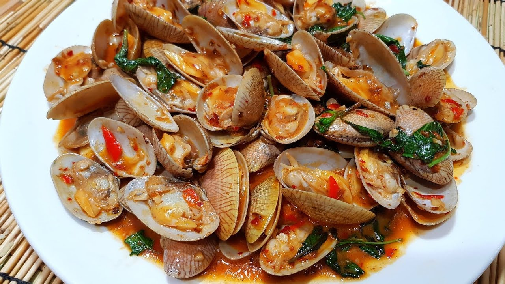

Eat-Rai-Dee
Home
Cook
Menu
(current)

Ingredients:
หอยลาย 1 กิโลกรัม
กระเทียมสับหยาบ 1/2 ช้อนโต๊ะ
พริกเผา (เลือกยี่ห้อตามชอบ) 3 ช้อนโต๊ะ
น้ำตาลทราย 1 ช้อนโต๊ะ (ถ้าน้ำพริกเผาหวานแล้วไม่ต้องใส่น้ำตาลก็ได้)
ซีอิ้วขาว 1 ช้อนโต๊ะ
น้ำมันหอย 2 1/2 ช้อนโต๊ะ
น้ำเปล่า 1/2 ถ้วย
พริกขี้หนู
ใบโหระพา
Instructions:
นำหอยลายมาล้างให้สะอาด จากนั้นนำหอยไปลวกในน้ำเดือดให้สุก แล้วนำขั้นมาพักให้สะเด็ดน้ำ
เด็ดใบโหระพาแล้วล้างให้สะอาด
ตั้งกระทะ ใส่น้ำมันและกระเทียมผัดให้พอได้กลิ่นหอม จากนั้นใส่น้ำพริกเผาผัดให้เข้ากัน
ใส่หอยลายลงไป จากนั้นผัดให้เข้ากัน
จากนั้นปรุงรสตามชอบ ด้วย น้ำตาลทราย ซีอิ้วขาว และน้ำมันหอย แล้วผัดให้เข้ากัน จากนั้นเติมน้ำเปล่า
ใส่พริกขี้หนูเพิ่มรสเผ็ด และใบโหระพา จากนั้นผัดต่ออักสักพัก แล้วตักใส่จาน พร้อมรับทาน
Result
Home
Menu